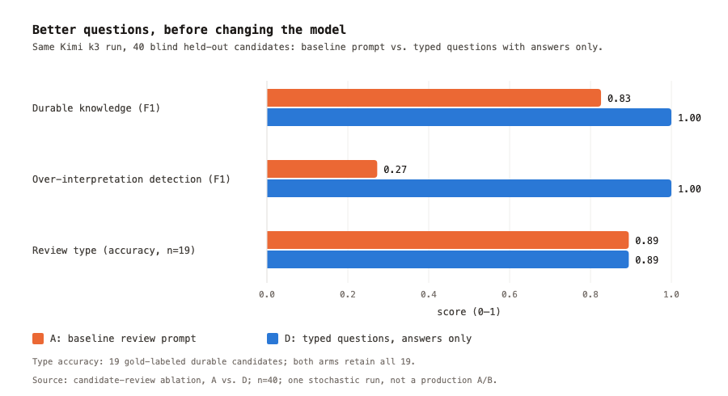
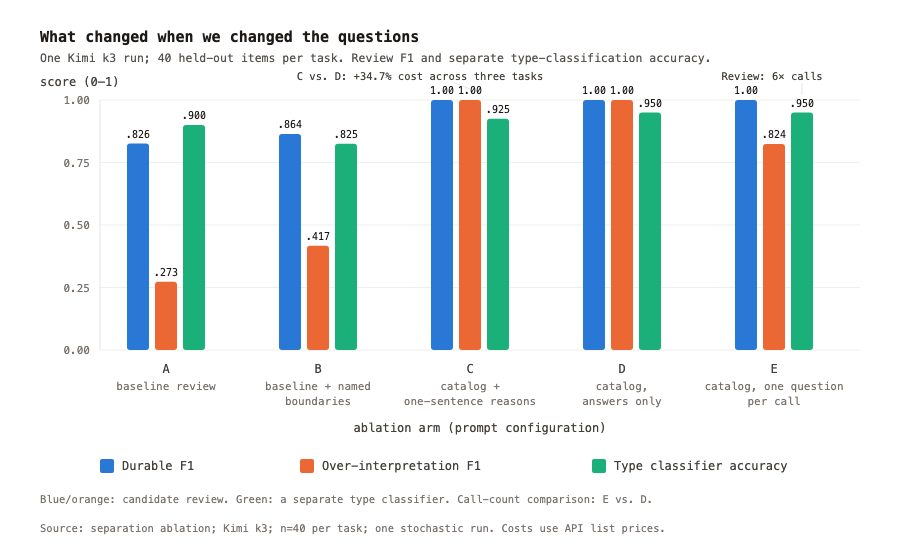
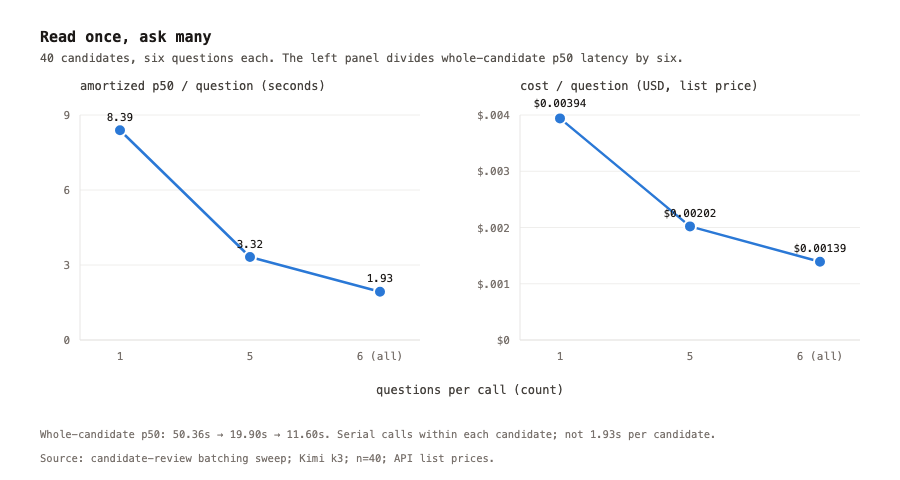
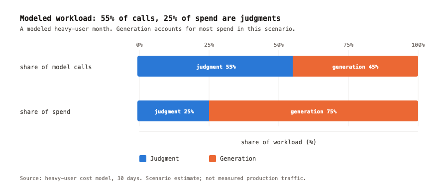
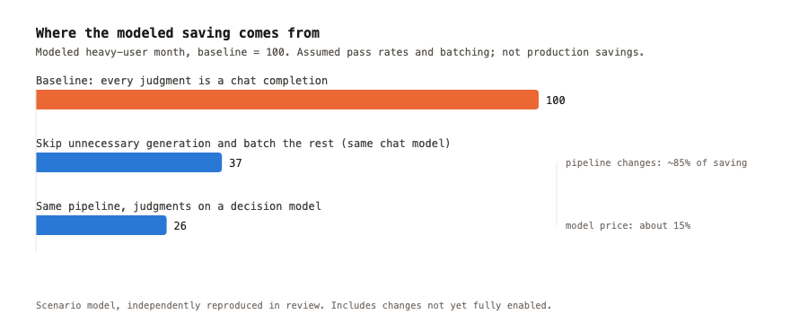
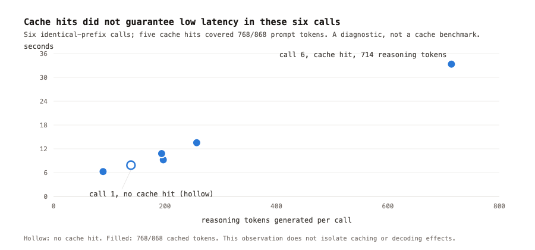

TypeSafe的Jev是个决策模型：给材料、给问题，返回限定范围内的答案和概率。Nowledge团队花了一周多，把Mem记忆系统里适合的后台环节按这个思路重构：决策归决策，生成归生成。
结论挺有意思：有些提升来自任务重构本身，不用换模型；决策模型真正的价值可能是帮系统省掉生成。下面拆开评审实验、成本账和检索、本地模型的尝试。
Nowledge Mem是上下文层基础设施，帮人和团队从AI工作中沉淀上下文，供不同Agent复用。从对话里抽记忆、整理知识、检索时选相关上下文，全是依赖语义理解的决策。
“这条命令成功了”和“每次部署前跑这条检查”都是新信息，一个记录操作结果，一个是长期有效的约定。长度、关键词、时间戳看不出区别，值不值得长期存、来源支不支持、有没有存过、有没有过度解读，判错了会被反复引用，甚至成为后续结论的地基。
Jev的接口把决策独立定义：一次调用里对同一份材料问多个问题，不同模型回答同一套题，标准可以单独组织和测试。需要生成文本的活（记忆内容、摘要、实体名）继续留给LLM。
受这个启发，团队先拿候选记忆评审做实验。原来一个调用里模型又判留存价值、又判来源支持、又判过度解读；改成只返回问题清单的答案。用DecisionClient抽象让Jev和聊天模型答同一套题，先不换模型，只比任务组织方式。
同一批Kimi k3评审40个候选记忆：长期价值判断F1从0.83到1.00，过度解读识别从0.27到1.00，类型准确率持平0.89。早前一次对比还显示类型分类大涨，这次没重复，不算可靠收益。类型准确率只在19个判为值得长期保留的候选上测。

光改问法还是把标准写清楚了也有功劳？五组消融一起跑：A基线、B基线加边界说明、C加一句话理由、D问题清单只给答案、E一题一调用。把混淆点写进原提示已有帮助，但不如把每个判断、标准、选项单独列出来。D确定问题清单后，再让模型给每题写理由，成本上升、评审分没涨。
写质量检查和独立类型分类也一样：要理由不提分，三任务总成本涨约35%，单调用中位延迟翻倍。程序用的是模型的决策，理由的文本没人消费，就别让模型写了。

问题定义清楚后，怎么组调用也有讲究。一个候选要问6个题，6次顺序调用p50要50秒，一次全问完11.6秒，摊到每题从8.4秒降到1.9秒，成本降65%。

重度用户一个月20个对话线程、每天60条记忆的建模里，决策类调用占一半以上，但只占约四分之一的钱。大头是生成：从对话抽记忆、抽图谱信息、回填数据，有些活在确认必要性之前就开干了。
直接换决策模型省不了多少，但便宜的语义判断让“先问值不值得干”变得划算。按原流程成本100算：保持原模型、把决策前置加能并的并行，估到37；决策交给Jev，估到26。约85%的省来自工作流改造，15%来自模型差价。实际小规模联调只降了10%到19%，模型还没完全接管评审，生产A/B还没跑。

省生成有个前提：跳过的内容得回访，确认没丢该存的知识；决策超时或失败不能当没知识，一律走原抽取流程。

抽取前筛内容要两个判断：新信息值得长期存，且还没存过。只报一过性操作结果或临时状态的、重复已有知识的，不必进LLM抽取。
比对已存知识的材料很关键：摘要里出现过不等于写进记忆库了，上次写失败过再拿摘要比对，模型理解对了也会跳过从没存过的知识。比对必须用成功写入的记忆。
误放和误杀不对称：误收的候选还能被去重和写质量检查拦下，误杀的永远到不了保存。接受模型答案的条件得分开设，一个置信度阈值管所有判断行不通。保守策略是只在模型足够确信该通过时才采信，拒绝或不确定的走原评审；三轮小对比零误收，但最终存下的正确知识时高时低。
检索是最早想用Jev的地方：检索路径加权、HyDE有没有用、查询里有没有时间约束。但延迟不等人，聊天模型做这些决策太慢。
连发6个同前缀决策请求，后5个约88%输入命中缓存，单调用还是要6到33秒。注意这是孤立实验调用，不是Mem的检索延迟，默认快速搜索不含这步。
落地从时间意图开始：聊天模型继续做通用意图分析，决策模型加时间解读；深度搜索里配了决策服务才试重排，超时就用原reranker。快速搜索是检索和时间分析并跑，有界等待，超时直接用原检索结果，目前决策模型默认关闭。模型推断的时间范围只影响排序、作为建议过滤器返回，用户显式给的过滤器才强制执行，推错了不能把证据从结果里删掉。

Laya这类能在用户电脑后台跑的模型很诱人：内容预筛、搜索意图解读本地做，不用每次等远端。三个编码器模型Laya、Von、Verdict在8核无GPU机器上各跑290次，预设门槛是每个任务中英都不比聊天基线低0.05，7个任务全挂。p50延迟0.2到3.3秒，峰值内存1.7到4.1GB。
朋友PsiACE做的Dohnuts（Qwen3.5-0.8B加LoRA加专用打分头，基座权重冻结）在7题里5题赢了最好的编码器：写质量判断F1从0.17到0.74，记忆类型分类准确率从0.48到0.70，都是Mem特有的概念题。需要通读全文再比对的任务没起色，总门槛还是没过。收窄到6个更简单的任务（标签复用、网页相关性、页面有没有实质内容，中英日各40例），最近的是Dohnuts做网页相关性，依然没过。
有些任务落点是二选一，但得到答案仍要理解内容和上下文。更大的基座加不同的训练数据能不能拓宽决策面，还要试。
词表、最小长度、文字系统检测这类常见规则在6个测试上全输聊天模型，4个还输给最小的本地模型。按长度判页面有没有实质内容，会误杀短而有用的页面。基线取决于要替掉什么：替聊天调用就得达到它的质量门槛；替启发式规则，少犯错、成本可接受就行。本地模型还没达标，但跟规则比有继续试的理由。
设置里的“Fast decisions”可以配决策服务：自带API key加TypeSafe AI，托管AI账号由服务给配置。开了之后决策模型用在若干环节，桌面和云有差异。超出替换原有调用的，注入内容识别、标签复用、页面实质内容判断、描述语言识别这些判断目前只记录不影响流程，继续跟现有方案对比。
最终省没省钱、搜没搜更快，要覆盖完整工作流的生产A/B，暂时还没有。作者给同行的建议：原实现留着当基线，先同模型比任务重构，再固定问题换模型，最后看完整工作流，这样才能分清涨分来自重构还是模型。
参考：https://x.com/NowledgeMem/status/2105134977210056804